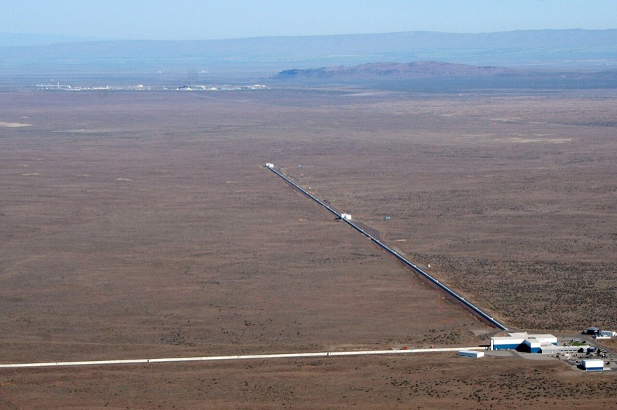
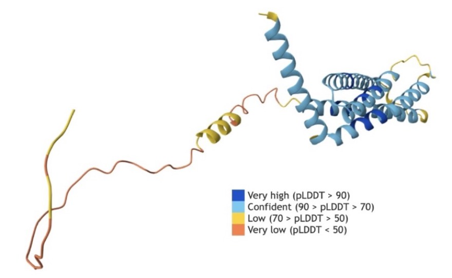

지속가능발전목표(SDGs)는 2015년 UN이 정한 17가지 약속이에요. 가난 없애기, 건강, 양질의 교육, 깨끗한 물, 기후 행동처럼 “지금 우리도, 미래의 사람들도 잘 살 수 있는 세상”을 만들기 위한 목표예요.
17개 목표 가운데 하나를 골라, 정보과학으로 풀 수 있는 문제를 찾아봐요.
41차시 · 14주차 · Ⅳ 정보과학 프로젝트 전체 보기
코드 아래 💡 코드 설명을 펼쳐 보고, 빈칸이 있으면 채운 뒤 실행해 보세요.
교과서 · Ⅳ 1-1 정보과학과 문제 해결
정보과학은 교실 밖 과학자들의 문제도 풀어요. 풀이 방식은 똑같아요. 문제를 작은 단계로 나누고(구조화), 단계마다 알맞은 알고리즘을 골라요.


| 분야 · 문제 | 문제 분석 및 구조화 (작은 단계로 나누기) | 알고리즘 설계 |
|---|---|---|
| 생명과학 유전자 가위(CRISPR-Cas9)가 엉뚱한 곳을 자르지 않게 하려면? |
목표가 아닌 비슷한 DNA를 실수로 고치는 ‘오프 타깃’ 위험이 있어요. DNA 서열 입력 → 표적 찾기 → 오프 타깃 예측 → 편집 성공률 평가 | 서열 비교 알고리즘으로 표적을 찾고, 딥러닝으로 오프 타깃 위험을 예측하고, 베이즈 최적화로 가장 알맞은 RNA를 만들어요. |
| 화학 2만여 가지 단백질이 접히는 모양을 예측하려면? |
서열이 길수록 예측이 어려워요. 서열 입력 → 기존 데이터 학습 → 접히는 길 시뮬레이션 → 에너지 최소화 → 3D 구조 생성 | 딥러닝으로 서열과 구조의 관계를 배우고, 몬테카를로 시뮬레이션으로 접히는 길을 따라가고, 에너지가 가장 낮은 안정된 모양을 찾아요. |
| 지구과학 지구 온도에 따라 미래 기후가 어떻게 변할까? |
기온·해수면·온실가스 농도의 변화를 예측해야 해요. 기후 데이터 입력 → 대기·해양 순환 모델 → 기후 변화 시나리오 생성 | 대기와 바다를 작은 부분으로 나눠 계산하고, 머신러닝으로 기후 데이터를 학습해 여러 시나리오를 그림으로 보여 줘요. |
| 물리학 블랙홀이 충돌할 때 생기는 중력파를 찾으려면? |
지진·바람·기기 진동 같은 잡음이 방해해요. 데이터 수집 → 잡음 제거 → 중력파 신호 찾기 → 블랙홀의 특성 추정 | 푸리에 변환으로 신호를 주파수로 바꾸고, 패턴 매칭으로 이론과 비교하고, 베이즈 추론으로 블랙홀의 질량과 속도를 계산해요. |
③. 사람의 감정은 수치 데이터로 정확히 재기 어려워요. 나머지는 데이터를 모아 분석할 수 있는 문제예요.
4단계 프로그램 검증 및 디버깅이에요. 문제 발견 및 구조화 단계에서는 데이터 수집·분석, 큰 문제를 작은 문제로 나누기, 해결 방안 아이디어 내기를 해요.
산불 발생을 줄이고 예방하는 방안을 정보과학으로 설계해 보자. 아래 예시를 참고해 모둠의 생각을 적어 보자.
| 단계 | 스스로에게 묻기 | 작성 예시 |
|---|---|---|
| 문제 정의 | 어떤 문제를 해결하고 싶나요? 해결하면 무엇이 달라지나요? | 산불 발생 줄이기 — 초기 상태: 한 해 동안 175건의 산불이 발생했다 / 목표 상태: 산불 건수를 연간 100건 이하로 줄인다 |
| 문제 분석 및 구조화 | 어떤 데이터가 필요하고, 어떻게 모을 수 있나요? | 원인은 입산자 실화와 불법 소각이며, 건조한 날씨와 강풍이 산불 확률을 높인다. 기상 데이터와 산불 발생 데이터를 분석해 고위험 지역과 시기를 찾아낸다 |
| 해결 방안 모색 | 고른 알고리즘이 문제를 어떻게 해결하나요? | 탐욕 알고리즘으로, 불이 번질 가능성이 높은 지역부터 방화선(불이 못 넘어오게 막는 띠)을 만든다 |
| 해결 방안 검증 | 왜 이 방법을 골랐나요? 더 나은 방법은 없나요? | 한정된 자원(사람·장비)을 효율적으로 나눠 쓸 수 있기 때문이다 |
교과서 · Ⅳ 정리 단원 마무리 · 배포와 우리 모둠 프로젝트
지속가능발전목표(SDGs)는 2015년 UN이 정한 17가지 약속이에요. 가난 없애기, 건강, 양질의 교육, 깨끗한 물, 기후 행동처럼 “지금 우리도, 미래의 사람들도 잘 살 수 있는 세상”을 만들기 위한 목표예요.
17개 목표 가운데 하나를 골라, 정보과학으로 풀 수 있는 문제를 찾아봐요.
케냐의 한 사회적 기업은 병원이 먼 농촌 마을 주민을 위해 진료 시설과 약을 갖춘 버스를 운영해요. 버스가 마을로 직접 찾아가 건강 검진과 치료를 하고, 예방 백신과 만성 질환 상담도 저렴하게 제공해요.
정보과학이라면? 어느 마을을 어떤 순서로 돌아야 가장 많은 사람을 만날 수 있을지 계산할 수 있어요.
| 평가 영역 | 스스로 물어보기 |
|---|---|
| 준비 | 역할을 알맞게 나누었는가? SDGs 17개 목표의 내용을 잘 파악했는가? |
| 해결 과정 | 토의로 해결 방안을 이끌어 냈는가? 나는 적극적으로 참여했는가? 알고리즘을 알맞게 적었는가? |
| 발표 | 발표 자료를 충실히 준비했는가? 말 빠르기와 목소리 크기가 알맞았는가? |
코드를 고쳐서 ▶ 실행하면 출력이 맞는지 바로 알려 줘요. 막히면 힌트부터 열어 보세요.
교과서 표의 네 분야(생명과학·화학·지구과학·물리학) 가운데 하나를 골라, 그 문제가 어떤 작은 단계로 나뉘었는지 화살표로 적어 보세요. 그리고 그중 한 단계에서 어떤 데이터를 다루는지 한 문장으로 적어요.
모둠 이름과 역할(자료 조사, 알고리즘 설계, 프로그래밍, 발표)을 정하세요. 그다음 SDGs 17개 목표 중 하나를 골라 문제를 한 문장으로 쓰고, 초기 상태와 목표 상태를 숫자로 적어요. 해결 방안 두 가지와 예상 효과도 적어 보세요.
모둠원들이 하고 싶은 SDGs 목표 번호에 투표했어요. 딕셔너리로 번호마다 몇 표인지 세고, 가장 많이 받은 목표를 출력하세요. 표를 세는 것도 ‘데이터 수집 → 분석’의 작은 예예요. count.get(v, 0)은 키가 없으면 0을 돌려줘요.
votes = [12, 13, 4, 13, 12, 13, 4, 13]
count = {}
for v in votes:
# 여기에 v번 목표의 표를 1 늘리는 코드를 쓰세요
pass
best = None
# 여기에 표가 가장 많은 목표 번호를 best에 담는 코드를 쓰세요
print(count)
print(f"선정 목표: {best}번 ({count.get(best, 0)}표)")
count[v] = count.get(v, 0) + 1 로 세고, for로 count를 돌며 지금까지의 최고 표보다 크면 best를 바꿔요.
votes = [12, 13, 4, 13, 12, 13, 4, 13]
count = {}
for v in votes:
count[v] = count.get(v, 0) + 1
best = None
for goal in count:
if best is None or count[goal] > count[best]:
best = goal
print(count)
print(f"선정 목표: {best}번 ({count.get(best, 0)}표)")
해설 — 사람의 감정은 수치 데이터로 정확히 재기 어려워요. 나머지는 데이터를 모아 분석할 수 있어요.
해설 — 푸리에 변환은 여러 악기가 섞인 소리에서 악기별 소리를 가려내듯 신호를 주파수로 나눠요.
우리 모둠이 고른 문제를 ‘초기 상태 → 목표 상태’ 한 줄로 적어 보세요.